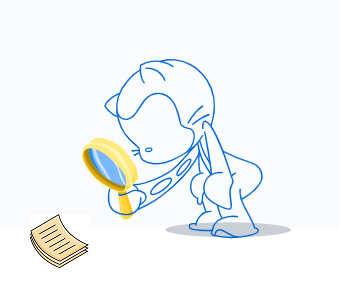

Adquirir los conocimientos previos en GIT y GITHUB, a partir de los recursos compartidos.
Git vs Github: ¿Cuál es la Diferencia y cómo Empezar? (2020, 4 febrero). Kinsta WordPress Hosting Gestionado. https://kinsta.com/es/base-de-conocimiento/git-vs-github/
Introducción a Git y Github. (2014, 3 junio). Desarrollo Web. https://desarrolloweb.com/articulos/introduccion-git-github.html
¿Como clonar un proyecto de GitHub? [Vídeo]. YouTube. https://www.youtube.com/watch?v=Br6CIxKC1uo&feature=youtu.be
Tutorial - Cómo subir un proyecto a Github. (2019, 25 febrero). [Vídeo]. YouTube. https://www.youtube.com/watch?v=gd-p2hJyaB8&feature=youtu.be
https://miro.medium.com/max/3840/1*YZL3_eHfjAJL9_yoIeerAQ.png
https://i1.wp.com/booleanstrings.com/wp-content/uploads/2019/05/github-resumes.png?resize=339%2C284&ssl=1
https://encrypted-tbn0.gstatic.com/images?q=tbn%3AANd9GcS8klEl1bgEt6es_s8qGavvspzbZomcwjSh3A&usqp=CAU
¡Bienvenidos!
En este OVA se encontrara información referente a la temática escogida, en este caso Git y GitHub, donde por medio de videos y textos digitales, se explicara la función y características de estas herramientas, así mismo se comparte información de cómo crear un repositorio en GitHub y como clonar el proyecto.
Es un software de control de versiones diseñado por Linus Torvalds, pensando en la eficiencia y la confiabilidad del mantenimiento de versiones de aplicaciones cuando éstas tienen un gran número de archivos de código fuente.
Github es un servicio para alojamiento de repositorios de software con el objetivo de hacer posible el compartir el código de una manera más fácil y al mismo tiempo darle popularidad a la herramienta de control de versiones Git.